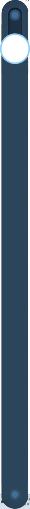
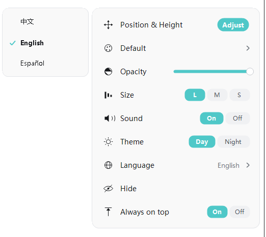

A big, always-on-top scroll bar on the edge of your screen. It scrolls the window you last clicked — browsers, Word, Excel, PDF, Notepad, anything. Skinnable, one small exe, silent install.
常驻桌面的大号滚动条：屏幕边缘一条看得见、点得中的滚动控制条，滚动的永远是你最后一次点击的那个窗口。浏览器、Word、Excel、PDF、记事本都行。皮肤可自定义，单文件小 exe，静默安装。

小狗旺旺 — background image, hover states and split track, all from one .skin file..skin 文件。Click: the target window scrolls to the very top. Hover for the skin-defined highlight.
单击：目标窗口回到最顶部。移上去有皮肤定义的悬停效果。
Drag it to scroll proportionally. Cursor becomes a hand on hover and a grabbing hand while dragging — even outside the bar.
按住拖动，按比例滚动。指针移上去是手形，拖动时是抓取手形（拖出条外也一样）。
Click: jump to the end of the document. Double-click A or B for the same jump.
单击：跳到文档最底部。A / B 双击同样是自动滑到顶 / 底。
Split into two segments at the knob's center — A→K and K→B — each with its own skin block. The knob floats above both.
以滑块中心为界拆成两段：A→K 与 K→B，两段各用一套皮肤样式，滑块浮在两者之上。
BigBar never steals focus: clicking it does not interrupt the window you are working in. It stays above every other window, including maximized apps.
不抢窗口焦点：点它不会打断你正在用的窗口。它永远浮在所有窗口之上，最大化应用也盖不住。
None. The old Ctrl+Alt+S shortcut was removed — show / hide the bar from the menu or the tray icon.
没有全局快捷键了：原来的 Ctrl+Alt+S 已取消，显示 / 隐藏请走菜单或托盘图标。

| Item | 菜单项 | What it does | 作用 |
|---|---|---|---|
| Skin | 皮肤 | Second-level list of every .skin in %AppData%\BigBar\skins; picking one closes the menu and reloads size, colours and images. | 二级菜单列出 %AppData%\BigBar\skins 里的所有 .skin；选完菜单自动收起，尺寸、配色、图片立刻重载。 |
| Size | 尺寸 | Small / Medium / Large. | 小 / 中 / 大。 |
| Opacity | 透明度 | Slider, 0–100. | 进度条选择，0–100。 |
| Position & height | 调整位置及高度 | Enter adjust mode; confirm (✓) / cancel (✕) buttons appear on the free side of the bar. | 进入调整状态，条的空闲一侧出现 确定（✓）/ 取消（✕）按钮。 |
| Add skin… | 添加皮肤… | Enter a skin code (max 16 chars), download http://www.bigbar.me/skin/<code> and unpack it into %AppData%\BigBar\skins, overwriting an existing copy. | 填皮肤编号（最多 16 个字符），下载 http://www.bigbar.me/skin/<编号> 并解压到 %AppData%\BigBar\skins，本地已存在则覆盖更新。 |
| Language | 语言 | English / 中文 / Español — also switches skin names and tray text. | English / 中文 / Español，皮肤名与托盘文案一起切换。 |
| Hide | 隐藏 | Hide the bar (restore from the tray icon). | 隐藏工具（从托盘图标恢复）。 |
Each skin is a JSON file with CSS-like blocks for A, B, K, F1, F2. Cursors, images, hover states and per-language names all live in the file.
一套皮肤就是一个 JSON 文件，A / B / K / F1 / F2 各写一段类 CSS 样式。指针、图片、悬停态、多语名字都写在里面。
{
"name": "MySkin",
"width": 100, "height": 720,
"language": { "en": "My Skin", "zh": "我的皮肤", "es": "Mi Piel" },
"elements": [
{ "name": "A", "action": "top",
"style": {
"cursor": "pointer",
"width": "100px", "height": "80px",
"background-image": "url(MySkin/a.png)",
"background-repeat": "no-repeat",
"background-size": "cover",
"background-position": "0px 0px"
},
"mouseover": { "style": { "background-image": "url(MySkin/a_hover.png)" } }
},
{ "name": "K", "action": "scroll",
"style": { "cursor": "pointer", "height": "120px" } },
{ "name": "F1", "style": { "background-image": "url(MySkin/track_top.png)", "background-repeat": "repeat-y" } },
{ "name": "F2", "style": { "background-image": "url(MySkin/track_bottom.png)", "background-repeat": "repeat-y" } }
]
}
Cursor rules: K shows a hand on hover, a grabbing hand while dragging (also outside the bar), and back to a hand when you release. A/B/K hover and drag cursors are taken from the skin's cursor field.
指针规则：K 悬停为手形，按住拖动为抓取手形（拖出条外也一样），松手仍停在 K 上时回到手形。A / B / K 的悬停与拖动指针都取自皮肤里的 cursor。
A default skin and three sample skins are written to %AppData%\BigBar\skins on first run. Files you edit yourself are never overwritten by an update — upgrades only touch files carrying the program's own marker.
首次运行会把默认皮肤与三套示例皮肤写到 %AppData%\BigBar\skins。你自己改过的文件不会被升级覆盖——升级只认程序自己写入的标记。
BigBar-Setup-1.1.1.exe and run it.%LocalAppData%\Programs\BigBar. Desktop + Start-menu shortcuts and auto-start are created.BigBar-Setup-1.1.1.exe /silent.Uninstall.exe /uninstall.BigBar-Setup-1.1.1.exe 后运行。%LocalAppData%\Programs\BigBar，自动生成桌面与开始菜单快捷方式、写入开机自启。BigBar-Setup-1.1.1.exe /silent。Uninstall.exe /uninstall。| Item | 内容 | Path | 路径 |
|---|---|---|---|
| Program | 主程序 | %LocalAppData%\Programs\BigBar\BigBar.exe | |
| Settings | 配置 | HKCU\Software\BigBar | |
| Skins | 皮肤 | %AppData%\BigBar\skins | |
| Sounds | 音效 | %AppData%\BigBar\sounds | |
| Log | 日志 | %TEMP%\BigBar.log | |
Upgrading from the old name: settings from Software\Gunbar and skins from %AppData%\Gunbar are inherited and copied on first start. Nothing is deleted.
从旧名字升级：旧键 Software\Gunbar 的设置与 %AppData%\Gunbar 的皮肤会在首次启动时继承并复制过来，旧内容不删除。
Check two things in the .skin: its width (a simplified file is often 70-something px wide) and whether the url(...) entries point at real images. If the file was overwritten, restore a nearby *.bakN copy (the highest number is the newest).
看两处：.skin 里的 width（被简化过的一般只有七十来像素宽），以及 url(...) 指向的图片是否真实存在。如果文件被覆盖过，把同目录里编号最大的 *.bakN 恢复回去即可。
Chromium-based and some UWP apps do not expose a standard scrollbar; direct-3D exclusive full-screen windows cannot be covered by a normal topmost window. Everything else — browsers, Office, PDF viewers, Notepad — works.
Chromium 系与部分 UWP 应用不暴露标准滚动信息；独占全屏（DirectX）窗口普通置顶窗盖不上。其余场景（浏览器、Office、PDF、记事本等）均可用。
1.1.0 — Renamed from Gunbar (earlier BigScrollBar) to BigBar: program, install folder, registry key, skin folder, shortcuts, uninstall entry and UI text. Existing settings and skins migrate automatically. Help link now points to this site.从「滚一下 Gunbar」（更早叫 大号滚动条 BigScrollBar）正式改名为 BigBar：程序名、安装目录、注册表键、皮肤目录、快捷方式、卸载项、界面文案全部改名；已有设置与皮肤自动迁移。使用说明链接改为本站。